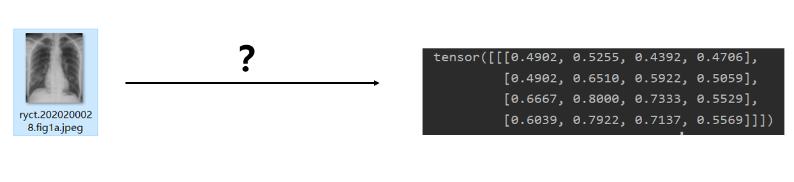
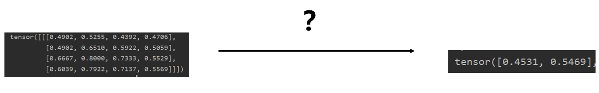

2.2 新冠肺炎X光分类
上一节，我们学习了pytorch python API的结构，本节将以一个具体的案例介绍pytorch模型训练流程，并提出一系列问题，供大家思考。当然，这些问题也是本书后续章节一一解答的内容。
相信绝大多数朋友接触过或者看到的第一个Hello Word级图像分类都是Mnist，思来想去觉得还是换点东西，于是选择了当下与所有人都息息相关的案例——新型冠状病毒肺炎（Corona Virus Disease 2019，COVID-19），简称“新冠肺炎”。关于新冠的背景，已经无需多言，口罩、绿码、核酸检测已经融入了我们的生活。因此，想让大家更进一步的了解COVID-19，所以选用此案例。当然，最重要的目的是要了解pytorch如何完成模型训练。
案例背景
2020年1月底2月初的时候，新冠在国内/外大流行。而确定一个人是否感染新冠肺炎，是尤为重要的事情。新冠肺炎的确诊需要通过核酸检测完成，但是核酸检测并不是那么容易完成的，需要医护人员采样、送检、PCR仪器上机、出结果、发报告等一系列复杂工序，核酸检测产能完全达不到当时的检测需求。当时，就有医生提出，是否可以采用特殊方法进行诊断，例如通过CT、X光的方法，给病人拍个片，几分钟就能看出结果，比核酸检测快了不少。于是，新冠肺炎患者的胸片X光数据就不断的被收集，并发布到网上供全球科学家使用，共同抗击新冠疫情。这里就采用了https://github.com/ieee8023/covid-chestxray-dataset上的数据，同时采用了正常人的X光片，来自于：https://github.com/zoogzog/chexnet。
由于本案例目的是pytorch流程学习，因此数据仅选择了4张，分为2类，正常与新冠，训练集2张，验证集2张。标签信息存储于txt文件中。具体目录结构如下：
├─imgs
│ ├─covid-19
│ │ auntminnie-a-2020_01_28_23_51_6665_2020_01_28_Vietnam_coronavirus.jpeg
│ │ ryct.2020200028.fig1a.jpeg
│ │
│ └─no-finding
│ 00001215_000.png
│ 00001215_001.png
│
└─labels
train.txt
valid.txt
建模思路
这是一个典型的图像分类任务，这里采用面向过程的思路给大家介绍如何进行代码编写。
step 1 数据
首先，需要编写代码完成数据的读取，变成模型能够读取的格式。这里涉及pytorch的dataset，dataloader，transforms等模块。以及需要清楚地知道pytorch的模型需要怎样的格式？数据模块需要完整的工作大体如下图所示：

首先，需要将数据在硬盘上的信息，如路径，标签读取并存储起来，然后被使用，这一步骤主要是通过COVID19Dataset这个类。类里有四个函数，除了Dataset类必须要实现的三个外，我们通过get_img_info函数实现读取硬盘中的路径、标签等信息，并存储到一个列表中。后续大家可以根据不同的任务情况在这个函数中修改，只要能获取到数据的信息，供\_getitem__函数进行读取。
接着，使用dataloader进行封装，dataloader是一个数据加载器，提供诸多方法进行数据的获取，如设置一个batch获取几个样本，采用几个进程进行数据读取，是否对数据进行打乱等功能。
其次，还需要设置对图像进行预处理(Preprocess)的操作，这里为了演示，仅采用resize 和 totensor两个方法，并且图片只需要缩放到8*8的大小，并不需要224,256,448,512,1024等大尺寸。(totensor与下一小节内容强相关)
step 2 模型
数据模块构建完毕，需要扔到模型里，因此我们需要构建神经网络模型，模型接收数据并前向传播处理，输出二分类概率向量。这时就需要用到nn.Module模块和nn下的各个网络层进行搭建模型，模型的搭建就像搭积木，一层一层的摞起来。模型完成的任务就如下图所示：下图示意图是一张分辨率为4*4的图像输入到模型中，模型经过运算，输出二分类概率。中间的“?"是什么内容呢？

这里，“？”是构建一个极其简单的卷积神经网络，仅仅包含两个网络层，第一个层是包含1个33卷积核的2d卷积，第二个层是两个神经元的全连接层（pytorch也叫linear层）。模型的输入被限制在了8\8，原因在于linear层设置了输入神经元个数为36， 8*8与36之间是息息相关的，他们之间的关系是为何呢？这需要大家对卷积层有一定了解了。（大家可以改一下36，改为35，或者transforms_func中的resize改为9*9，看看会报什么错，这些错或许是大家今后经常会遇到的）
step3 优化
模型可以完成前向传播之后，根据什么规则对模型的参数进行更新学习呢？这就需要损失函数和优化器的搭配了，损失函数用于衡量模型输出与标签之间的差异，并通过反向传播获得每个参数的梯度，有了梯度，就可以用优化器对权重进行更新。这里就要涉及各种LossFunction和optim中的优化器，以及学习率调整模块optim.lr_scheduler。
这里，采用的都是常用的方法：交叉熵损失函数（CrossEntropyLoss）、随机梯度下降法（SGD）和按固定步长下降学习率策略（StepLR）。
step4 迭代
有了模型参数更新的必备组件，接下来需要一遍又一遍的给模型喂数据，并且监控模型训练状态，这时候就需要for循环登场，不断的从dataloader里取出数据进行前向传播，反向传播，参数更新，观察loss、acc，周而复始。当达到满足的条件，如最大迭代次数、某指标达到某个值时，进行模型保存，并break循环，停止训练。
以上就是一个经典的面向过程式的代码编写，先考虑数据怎么读进来，读进来之后喂给的模型如何搭建，模型如何更新，模型如何迭代训练到满意。请大家结合代码一步一步的观察整体过程。
在经过几十个epoch的训练之后达到了100%，模型可以成功区分从未见过的两张图片：auntminnie-a-2020_01_28_23_51_6665_2020_01_28_Vietnam_coronavirus.jpeg，00001215_000.png。
由于数据量少，随机性非常大，大家多运行几次，观察结果。不过本案例结果完全不重要！），可以看到模型的准确率（Accuracy）变化。
一系列问题
通过上述步骤及代码，虽然完成了一个图像分类任务，但其中很多细节想必大家还是弄不清楚，例如：
图像数据是哪用一行代码读取进来的？
transforms.Compose是如何工作对图像数据进行转换的？
ToTensor又有哪些操作？
自己如何编写Dataset？
DataLoader有什么功能？如何使用？有什么需要注意的？
模型如何按自己的数据流程搭建？
nn有哪些网络层可以调用？
损失函数有哪些？
优化器是如何更新model参数的？
学习率调整有哪些方法？如何设置它们的参数？
model.train()与model.eval()作用是什么？
optimizer.zero_grad()是做什么？为什么要梯度清零？
scheduler.step() 作用是什么？应该放在哪个for循环里？
等等
如果大家能有以上的问题提出，本小节的目的就达到了。大家有了模型训练的思路，对过程有了解，但是使用细节还需进一步学习，更多pytorch基础内容将会在后续章节一一解答。
下一小节我们将介绍流动在pytorch各个模块中的基础数据结构——Tensor（张量）。